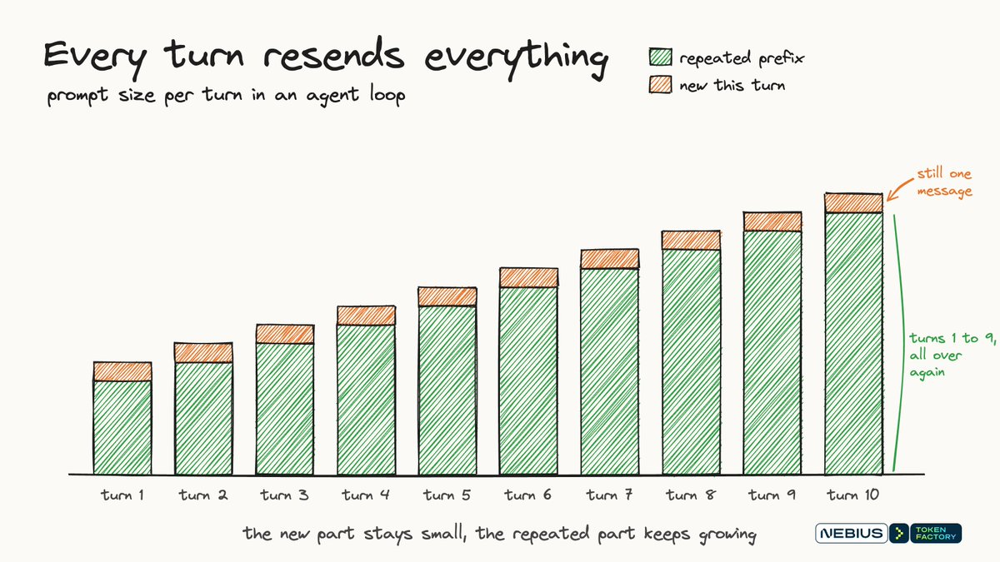
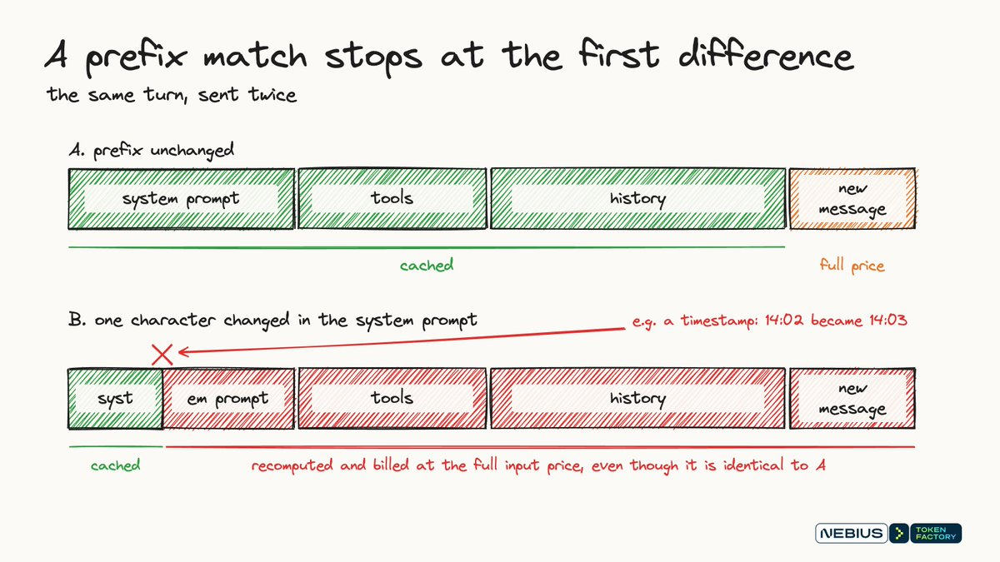
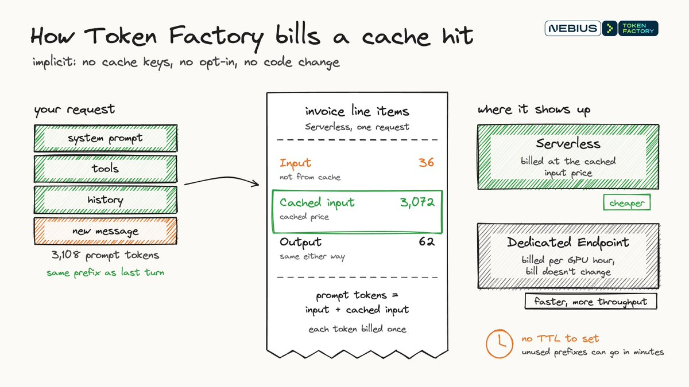
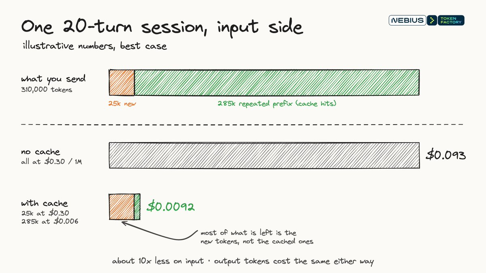
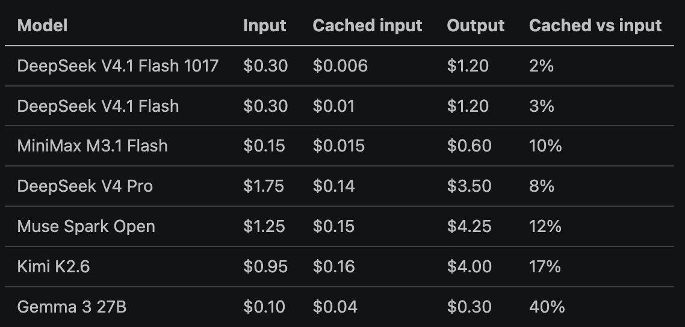
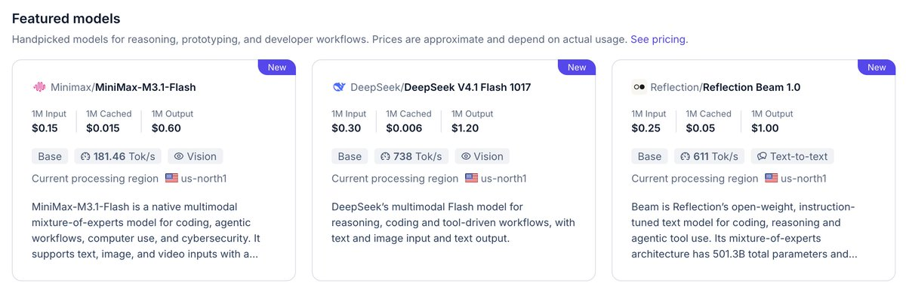
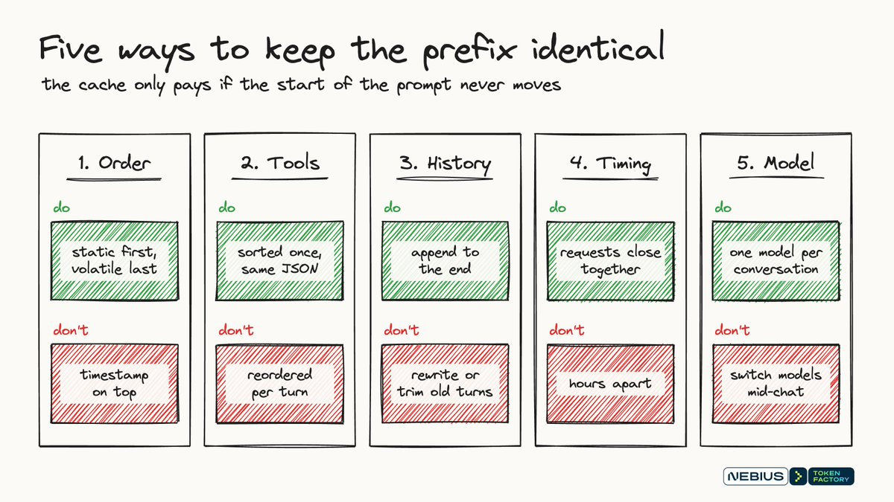
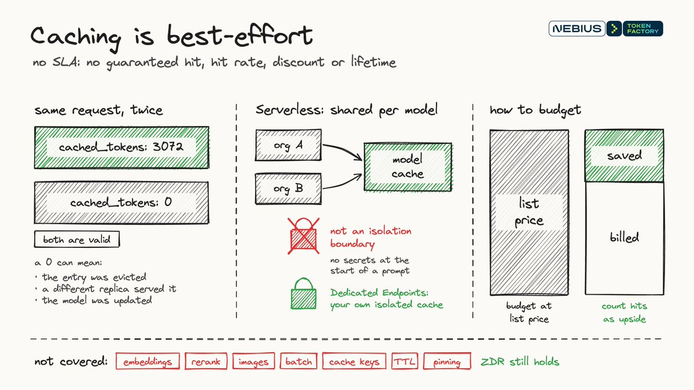
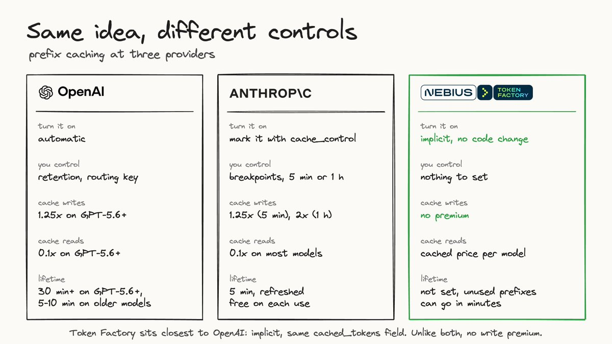

Agent每轮都在为同一个提示词付费。Agent循环的每次调用都会重发系统提示词、工具定义与全部历史，模型上一轮刚读过其中绝大部分。前缀缓存让服务端复用这部分工作：命中时，重复部分按低得多的价格计费。
Nebius Token Factory最近新增了缓存token。以DeepSeek V4.1 Flash 1017为例，未缓存输入每百万token 0.30美元，缓存输入每百万token 0.006美元，是标价的2%。真正的问题不是缓存值不值得，而是提示词里实际命中多少，以及自己的代码里什么在破坏命中。
LLM API是无状态的：模型不记得上一次请求。于是每轮里Agent都会把整段对话再发一次。一轮典型的Agent调用由四部分组成：系统提示词（指令、人设、规则）；工具定义（常为数千token的JSON Schema）；此前的消息、工具调用与工具结果；唯一的新内容：一条用户消息或最新工具结果。

前三部分与上一轮发的内容完全相同，只有第四部分是新的；而且重复部分每轮都在增长：第10轮背着第1到第9轮的全部内容。长循环里，提示词token的大多数是模型已经见过的前缀。
没有缓存时，服务端每次调用都从头处理全部内容；已经在几秒前算过的token，仍按完整输入价收费。
模型生成任何内容之前，先把整个提示词跑一遍预填充（prefill），产出每个token的注意力键与值，通常称为KV缓存。读取长提示词时，昂贵的部分正是这一步计算；而且它是确定性的：同样的token、同样的顺序，得到同样的结果。

推理引擎因此会把最近的KV状态留下来。新请求进来时，引擎检查提示词开头是否匹配最近处理过的某个提示词；匹配就复用已存状态，只计算剩余部分。
三个细节决定后面的一切：第一，精确前缀匹配。匹配从第一个token开始，到首个不同的token为止；此后的一切都要重算，即使与上次完全相同。第二，按块存储。引擎按固定大小的块缓存；文档说缓存token数通常向下取整到块边界，所以不会正好等于重复文本的长度。第三，按请求算命中或未命中。命中意味着提示词的某个前缀被复用；未命中意味着一个都没复用，全部提示词token按输入价计费。
缓存里存的是算好的状态，不是文本：在Token Factory上，它无法还原成文本，也不会通过任何API暴露。
Token Factory上的缓存是隐式的：没有缓存键、无需主动开启、无需改代码；同一前缀再发一次就可能命中。Serverless与专用端点（Dedicated Endpoints）都支持；价格差异只体现在Serverless上：那里缓存token按各模型的缓存输入价计费。专用端点按GPU小时计费，账单不变，得到的是吞吐与延迟。

计费把每个提示词一分为二，每个提示词token只计一次：提示词token = 输入（未缓存）token + 缓存输入token。缓存输入在账单与用量报告里是单独一行。
没有文档化的TTL：文档说未使用的前缀“可能仅几分钟后就被移除”，负载下随时可能被逐出，频繁复用的前缀留存更久；用户自己无法设置TTL。
先看文档里的例子：3108个提示词token，其中3072个缓存。计费为36个输入token加3072个缓存输入token，再加输出。DeepSeek V4.1 Flash 1017的价格为输入每百万token 0.30美元、缓存输入0.006美元、输出1.20美元，只算输入侧：

无缓存：3108 × 0.30 / 100万 = 0.000932美元；有缓存：(36 × 0.30 / 100万) + (3072 × 0.006 / 100万) = 0.0000108 + 0.0000184 = 0.0000292美元。输入侧便宜约32倍；输出计费两种情况相同。
单次请求只是小钱，Agent循环里才会累积。下面是示意token数的算例（不是实测运行）：系统提示词加工具定义6000 token；每轮新增1000 token（用户消息、工具调用、工具结果）；每会话20轮。第n轮发送6000 + 1000 × (n - 1)个token，20轮合计：20 × 6000 + 1000 × (0 + 1 + … + 19) = 120000 + 190000 = 310000个提示词token。
无缓存时全部按0.30美元/百万token计费：310000 × 0.30 / 100万 = 每会话0.093美元。最佳缓存情况下：第1轮全未命中（6000未缓存）；从第2轮起，除新增1000 token外全部命中：未缓存6000 + 19 × 1000 = 25000 token × 0.30 / 100万 = 0.0075美元；缓存310000 - 25000 = 285000 token × 0.006 / 100万 = 0.00171美元；合计每会话0.00921美元。
输入侧便宜约10倍；每天1000个会话，93美元变成9.21美元。两点诚实说明：这是最佳情况，块取整与逐出会让真实缓存占比更低；输出token不在算例里，因为缓存不改变输出计费。
Token Factory上缓存价按模型设定，价差很大。以下为模型目录里的部分价格（每百万token，2026年10月28日读取）：
| 模型 | 输入 | 缓存输入 | 输出 | 缓存占输入 |
|---|---|---|---|---|
| DeepSeek V4.1 Flash 1017 | $0.30 | $0.006 | $1.20 | 2% |
| DeepSeek V4.1 Flash | $0.30 | $0.01 | $1.20 | 3% |
| MiniMax M3.1 Flash | $0.15 | $0.015 | $0.60 | 10% |
| DeepSeek V4 Pro | $0.75 | $0.14 | $3.50 | 8% |
| Muse Spark Open | $1.25 | $0.15 | $4.25 | 12% |
| Kimi K2.6 | $0.95 | $0.16 | $4.00 | 17% |
| Gemma 3 27B | $0.10 | $0.04 | $0.30 | 40% |
对Agent循环而言，缓存列要和输入列一样认真看：如果提示词的90%是重复前缀，缓存价就是输入账单的大头。没有缓存价的模型，无论命中与否，全部提示词token都按常规输入价计费。


因为是精确前缀匹配，任务表述起来很简单：让提示词开头尽可能久地保持字节一致。具体做法：

每次响应都会在usage对象里报告缓存token；prompt_tokens始终是总数，已包含缓存token。Chat Completions与Completions在usage.prompt_tokens_details.cached_tokens里返回；Responses API在usage.input_tokens_details.cached_tokens里返回。
Token Factory兼容OpenAI接口，标准OpenAI SDK换个base URL就能用。流式传输时设置stream_options的include_usage为True：并非所有模型在流式模式下默认返回usage，没有它，即使token仍在计费，也可能看不到缓存数；usage随最后一个chunk到达。
每轮都记这一行：一轮一行，足以看清循环在哪里漏损。
这是多数缓存文章跳过的权衡。Token Factory对缓存不提供SLA：不保证命中、不保证命中率、不保证折扣、不保证前缀留存时间。

零是合法答案：重复请求也可能返回cached_tokens为0，逐出、换了副本或模型更新都可能导致；这不是错误。反过来，首次请求也可能出现命中：如果它与别的流量共享对话模板或前缀，全新对话也可能看到缓存token。
Serverless缓存按模型共享：只要同一模型最近收到过相同起始内容就能命中，与组织或API密钥无关。命中不会透露先前请求是谁发的、其余内容是什么；但文档明确说明：不要把缓存当作隔离边界，也不要把机密放在提示词开头。专用端点按客户隔离缓存。
零数据保留（ZDR）下依然成立：缓存工作方式相同，提示词与响应不会被存储或记录。不在覆盖范围内：Embeddings、rerank与图像API不报告也不计费缓存token；批量推理不在覆盖范围内；无法设置缓存键、TTL或把某个提示词钉在缓存里；文档提到的prompt_cache_key只是路由到持有缓存的服务器的提示，不是访问密钥。
规则是：为缓存命中做设计，但不要把它写进定价模型。按标价做预算，把每次命中当作实测到的额外收益。
思路处处相同，控制手段不同。OpenAI自动缓存，命中报告在同一个prompt_tokens_details.cached_tokens字段；文档列出GPT-5模型最小可缓存提示词长度为1024 token，内存条目通常在5到10分钟不活跃后失效，另有最长24小时的延长保留选项。

Anthropic要求用cache_control标出要缓存的内容，可以是一个顶层字段，也可以在块上显式设置断点；缓存按工具、系统、消息的顺序覆盖；默认存活5分钟，每次使用免费刷新，另有1小时选项；5分钟TTL的缓存写入价为基础输入价的1.25倍，多数模型缓存读取为0.1倍。
Token Factory最接近OpenAI模式：隐式、无写入溢价、同一响应字段。区别是用户什么都选不了；好处是不用改任何代码就能开始获得命中。
参考：https://x.com/Arindam_1729/status/2115436560850243998